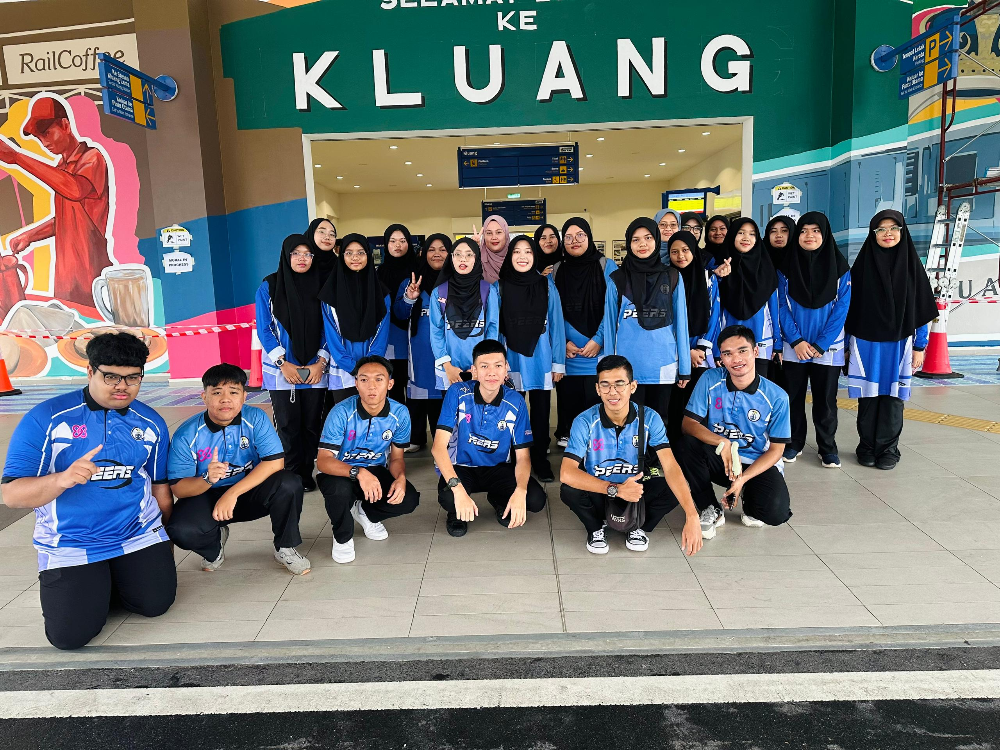
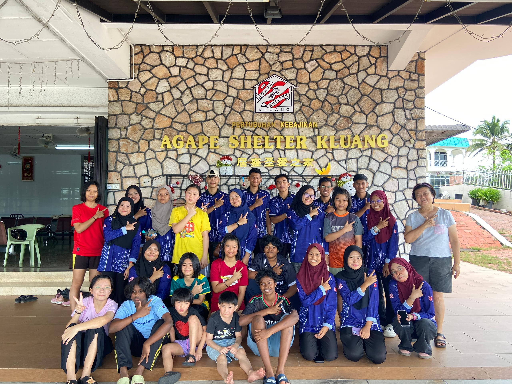
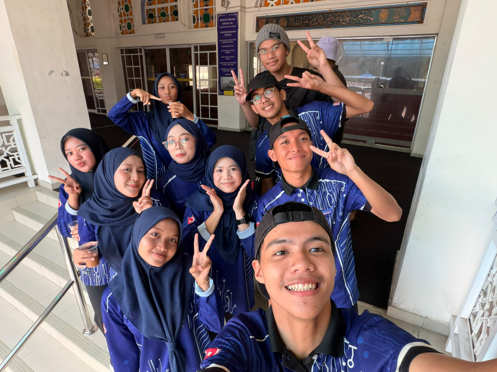
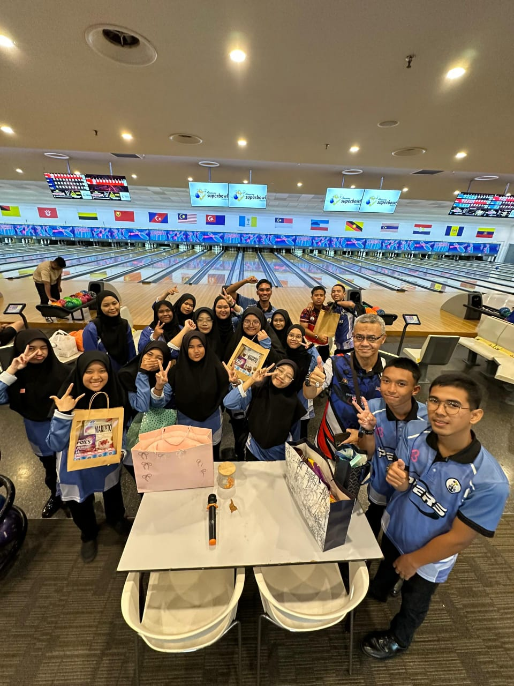
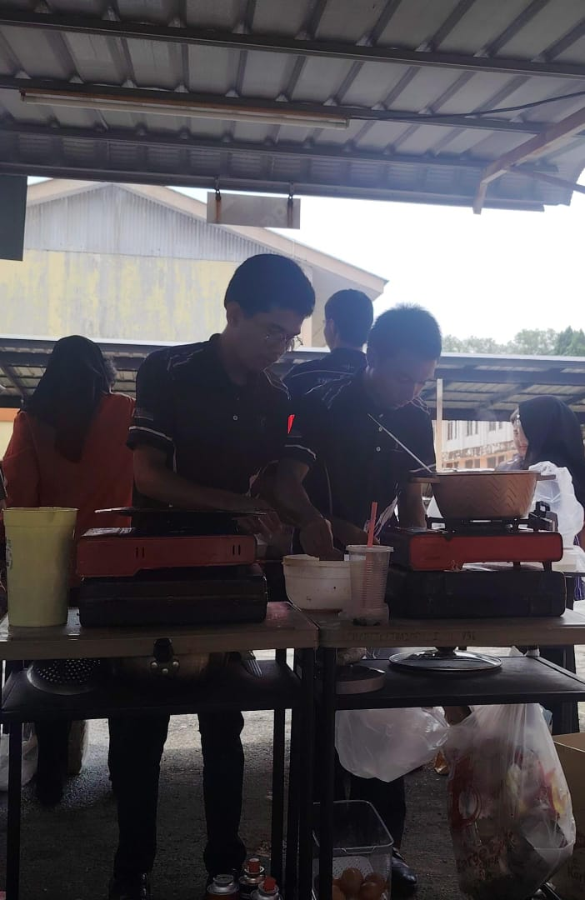
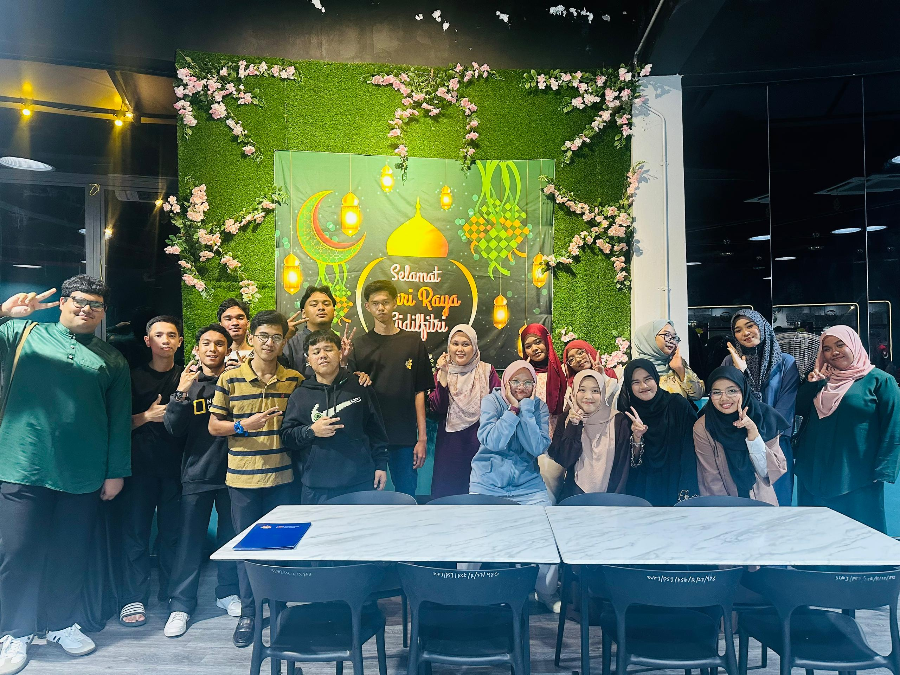

PEERS
Rail Smart Journey
Program anjuran PEERS yang melibatkan idea inovasi dalam pengangkutan pintar dan penyelesaian berasaskan teknologi untuk kemudahan perjalanan.

Program anjuran PEERS yang melibatkan idea inovasi dalam pengangkutan pintar dan penyelesaian berasaskan teknologi untuk kemudahan perjalanan.

Menjalankan aktiviti khidmat komuniti yang menekankan nilai kemanusiaan, kerjasama, dan kesedaran sosial dalam membantu masyarakat yang memerlukan.

Menyertai program khidmat komuniti di Masjid Al-Yahya yang memupuk semangat kerjasama, sukarelawan, dan keprihatinan terhadap masyarakat setempat.

Menjadi sebahagian daripada pasukan dalam kejohanan tenpin bowling anjuran PEERS tahun 2025 yang menonjolkan semangat kerjasama dan disiplin.

Terlibat dalam booth jualan anjuran PEERS yang memerlukan kemahiran komunikasi, pemasaran, dan pengurusan jualan secara berkesan.

Menyertai program Iftar Ramadhan yang mengeratkan silaturahim, memupuk semangat kebersamaan, dan menggalakkan nilai keprihatinan dalam komuniti.